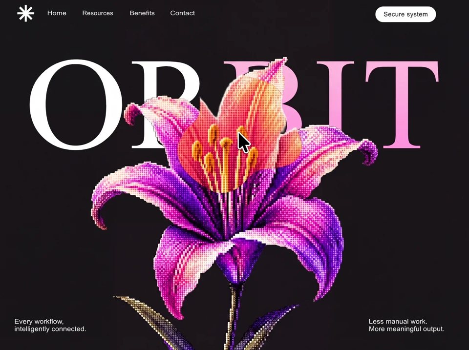

Orbit Flora
AIaiyilai-ai 公开页面
收录时间：2026-08-14正文：9,647 字符

本地预览图 · jpeg
完整提示词
Build a **single-file** `index.html` full-viewport poster. No scroll. No frameworks. No redesign. Match layout, type, color, both image URLs, entrance choreography, mobile menu, and mouse morph-reveal **exactly**.
---
## 0. Document shell
```html
<!doctype html>
<html lang="en" class="anim">
<head>
<meta charset="utf-8">
<meta name="viewport" content="width=device-width, initial-scale=1, viewport-fit=cover">
<meta name="theme-color" content="#161616">
<title>Orbit — Secure system</title>
```
- Root `<html>` starts with class `anim`
- `html, body`: `width/height 100%`, `margin: 0`, `overflow: hidden`, background `#161616`
- Body: `"Orbit Sans", Arial, Helvetica, sans-serif`, color `#fff`, antialiased
- CSS vars:
- `--ink: #ffffff`
- `--surface: #161616`
- `--orb-reveal: cubic-bezier(.16, 1, .3, 1)`
- `--orb-soft: cubic-bezier(.25, .8, .28, 1)`
Structure:
```
main.viewport (fixed, inset 0, black)
section.stage (absolute, inset 0, contain:strict, isolation:isolate)
[all poster elements]
```
Z-order: wordmark `1` → flower `2` → corner copy `3` → brand/nav/pill `4`. Mobile: scrim `9`, sheet `10`, burger `12`.
---
## 1. Fonts (mandatory)
Two custom TrueType faces, weight 400, `font-display: block`, embedded as `@font-face` data-URLs:
1. **`"Orbit Sans"`** — nav, pill, corner copy. Fallback: Arial, Helvetica, sans-serif
2. **`"Orbit Display"`** — giant wordmark only. Fallback: `"Times New Roman", Times, serif`
Do **not** use Inter, Roboto, system-ui, or Playfair. Extract the original base64 TTFs from the existing `index.html` `@font-face` blocks if needed.
---
## 2. The two image URLs (use exactly — do not replace)
Both are Higgsfield-proxied PNGs as webp `w=1280&q=85`. Transparent backgrounds. Pixel-art / halftone lilies.
### FRONT / BG lily (default visible)
```
https://images.higgs.ai/?default=1&output=webp&url=https%3A%2F%2Fd8j0ntlcm91z4.cloudfront.net%2Fuser_38xzZboKViGWJOttwIXH07lWA1P%2Fhf_20260808_192942_e1086505-d7da-433b-a59b-8220f4e6c808.png&w=1280&q=85
```
Raw source:
```
https://d8j0ntlcm91z4.cloudfront.net/user_38xzZboKViGWJOttwIXH07lWA1P/hf_20260808_192942_e1086505-d7da-433b-a59b-8220f4e6c808.png
```
### REVEAL / TOP lily (only visible inside morph trail)
```
https://images.higgs.ai/?default=1&output=webp&url=https%3A%2F%2Fd8j0ntlcm91z4.cloudfront.net%2Fuser_38xzZboKViGWJOttwIXH07lWA1P%2Fhf_20260808_151324_bf318a5f-5525-4fc7-aab5-e9a341018828.png&w=1280&q=85
```
Raw source:
```
https://d8j0ntlcm91z4.cloudfront.net/user_38xzZboKViGWJOttwIXH07lWA1P/hf_20260808_151324_bf318a5f-5525-4fc7-aab5-e9a341018828.png
```
Front `alt`: `Pixel-art pink and violet lily`. Reveal `alt=""`. No other images.
---
## 3. Every on-stage element (desktop)
### Brand mark
SVG `.brand-mark`, `viewBox="0 0 66 62"`, white 4-stroke asterisk, `stroke-width: 5px`, square caps:
- `(33,1)→(33,61)`, `(3,31)→(63,31)`, `(11.8,9.8)→(54.2,52.2)`, `(54.2,9.8)→(11.8,52.2)`
- Position: `top: 2.141745dvh; left: 3.854167vw; width: clamp(34px, min(3.4375vw, 5.2dvh), 66px)`
### Primary nav
Links: Home / Resources / Benefits / Contact → `#home` `#resources` `#benefits` `#contact`
White, size `clamp(13px, min(1.302083vw, 2.05dvh), 25px)`, each `li` at `top: 3.426791dvh`:
| Item | left | scaleX |
|---|---|---|
| Home | `10.104167vw` | `1.165` |
| Resources | `17.526042vw` | `1.052` |
| Benefits | `27.578125vw` | `1.126` |
| Contact | `36.171875vw` | `1.168` |
`.primary-nav` is full-stage but `pointer-events: none`; links opt back in with `pointer-events: auto` so the lily stays hoverable.
### Secure system pill
White pill, text `#161616`, `top: 2.336449dvh; right: 7.5vw`, height `clamp(34px, 4.439252dvh, 57px)`, `border-radius: 999px`, tracking `0.026923em`.
### Wordmark ORBIT
```html
<h1 class="orbit-word" id="orbit-title" aria-label="Orbit">
<span class="orbit-word__mask">
<span class="orbit-word__inner">
<span class="orbit-word__white"><span class="orbit-word__o">O</span>R</span>
<span class="orbit-word__pink">BIT</span>
</span>
</span>
</h1>
```
- `top: 11.565421dvh; left: 4.348958vw`
- `"Orbit Display"`, size `min(27.8125vw, 55dvh)`, tracking `0.033708em`
- **OR** solid `#fff`; **O** has `scaleX(1.0866)`, `margin-right: 0.042135em`
- **BIT** gradient: `linear-gradient(180deg, #ffc5dc 0%, #fd86db 100%)` via `background-clip: text`
### Flower stack
```html
<div class="flower">
<img class="flower__sizer" src="[FRONT]" alt="" aria-hidden="true">
<div class="flower__layer flower__layer--bg">
<img src="[FRONT]" alt="Pixel-art pink and violet lily">
</div>
<div class="flower__layer flower__layer--top" aria-hidden="true">
<img src="[REVEAL]" alt="">
</div>
</div>
```
- `top: 14.749065dvh; left: 49.121328vw; height: 106.109034dvh; transform: translateX(-50%); pointer-events: none`
- Sizer: hidden, `height: 100%; width: auto` (sets intrinsic width)
- Layers: `absolute; inset: 0`; imgs `object-fit: cover`
- Top layer starts fully masked out: `mask-image: linear-gradient(#0000, #0000)`
### Corner copy
Color `#f7f7f7`, size `clamp(14px, min(1.40625vw, 2.102804dvh), 27px)`, `bottom: 4.361371dvh`
Left (`left: 3.177083vw; scaleX(1.073)`): `Every workflow, / intelligently connected.`
Right (`left: 78.28125vw; scaleX(1.058)`): `Less manual work. / More meaningful output.`
Animate via inner `.support-copy__inner` only.
### Mobile chrome (hidden on desktop)
Burger + scrim buttons. Shown only at `(max-width: 900px), (max-aspect-ratio: 4 / 5)`.
---
## 4. Mouse morph-reveal trail (implement exactly)
**Not** a CSS circle spotlight. Organic morphing blob trail that punches holes in the front lily and paints the reveal lily in the same shape.
### Constants
```
TRAIL_MAX_POINTS = 60
TRAIL_HEAD_R = 140
TRAIL_NOISE_AMP = 44
TRAIL_BLOB_PTS = 24
TRAIL_FADE_SPEED = 0.92
TRAIL_SAMPLE_DIST = 8
```
### Architecture
Each `MorphTrailLayer`:
- Hidden offscreen canvas (`display:none`) sized to `.flower`
- Visible absolute layer with cover-fit `<img>`
- Every active frame: `maskImage = url(canvas.toDataURL())`, size `100% 100%`, no-repeat
Two layers, same trail:
- `invert=false` → FRONT/BG (white fill → `destination-out` blobs = holes)
- `invert=true` → REVEAL/TOP (clear canvas → white blobs = only trail shows)
Mouse on **`.stage`**: `mousemove` / `mouseenter` / `mouseleave`. Convert to flower canvas space via getBoundingClientRect + scale.
### Per frame
```
targetR = hovering ? 140 : 0
headRadius += (targetR - headRadius) * (hovering ? 0.14 : 0.04)
```
When hovering and `headRadius > 5`, if distance from last sample `> 8px`, push `{x,y,r:headRadius,alpha:1,seed:random*100}`; cap 60.
Decay: `alpha *= 0.92; r *= 0.995`; remove if `alpha < 0.01`.
`time += 0.016`.
### `drawMorphBlob(ctx, cx, cy, r, t, seed)`
Skip if `r < 2`. 24 points:
```
n1 = sin(angle*3 + t*1.4 + seed) * 0.45
n2 = sin(angle*5 - t*0.9 + seed*2.3) * 0.3
n3 = cos(angle*2 + t*1.8 + seed*0.7) * 0.25
noise = (n1+n2+n3) * 44 * (r/140)
```
Closed path via midpoints + `quadraticCurveTo` (organic blob, not circle). Fill white.
Result: moving the mouse leaves a morphing organic wipe that cuts the front lily away and paints the second lily along a fading trail. Wordmark still shows through transparent petals. Leave stage → head lerps shut, trail dies.
---
## 5. Entrance animation (once)
Pure CSS while `<html class="anim">`. JS removes `.anim` after last `orb-*` animation finishes (6000ms safety). Never replays.
Keyframes:
- `orb-word`: `translateY(118%) → 0` (no fade)
- `orb-subject`: fade + `translateX(-50%) translateY(3.4dvh → 0)` — do **not** scale the lily
- `orb-corner` / `orb-quiet`: small rise + fade
- `orb-dim`: fade only
Desktop timing:
| Element | anim | dur | delay |
|---|---|---|---|
| brand | quiet | 620ms | 100ms |
| nav 1–4 | dim | 550ms | 180 / 225 / 270 / 315ms |
| pill | quiet | 620ms | 340ms |
| word inner | word | 1150ms | 300ms |
| flower | subject | 1150ms | 660ms |
| both corners | corner | 720ms | **980ms same** |
Easing: word/flower use `--orb-reveal`; rest use `--orb-soft`.
While animating, wordmask has overflow hidden + padding/negative margin so the serif can rise without clipping layout.
Do **not** animate transform on nav `li`, corner parents, or the O — their `scaleX` is optical.
Reduced motion: only whole-stage 280ms fade.
Mobile entrance: burger instead of pill/nav; slightly tighter delays.
---
## 6. Responsive essentials
**(max-width: 900px) or (max-aspect-ratio: 4/5):** white circular burger, frosted sheet menu, scrim, Escape/Tab-trap/inert when closed.
**(max-aspect-ratio: 4/5):** smaller centered lily `height: min(55dvh, 110vw)`, word `min(27.5vw, 18dvh)`, wrapping corner copy.
**(max-width: 1200px) or portrait:** center the wordmark (`left:0; width:100%; text-align:center`).
---
## 7. Acceptance checklist
- Black `#161616` poster, no scroll
- Asterisk + 4 nav words with exact scaleX + white Secure system pill
- Giant OR white + BIT pink gradient; O slightly wider
- FRONT lily at exact desktop coords, overlapping BIT
- Load: frame → word rises → lily rises in front → both corners together; then `.anim` gone
- Mouse: 140px-head morphing trail, 24-point noisy blobs, fade 0.92, sample every 8px, max 60 points
- Trail punches FRONT and paints REVEAL; wordmark readable through transparency
- Exact two Higgsfield URLs above
- Orbit Sans + Orbit Display embedded把上面的提示词完整复制到支持长文本的 AI 工具中，再按需要替换品牌名、配色与文案。提示词描述的是整页结构与动效节奏，生成后建议在真实浏览器里检查首屏加载和移动端表现。
来源与版权
该条目来自公开提示词页面，原始出处信息未随页面提供。
提示词文本与预览素材的版权归原作者或原平台所有，本站仅作索引与归档。若你是权利人并希望移除本条内容，请通过联系方式告知。